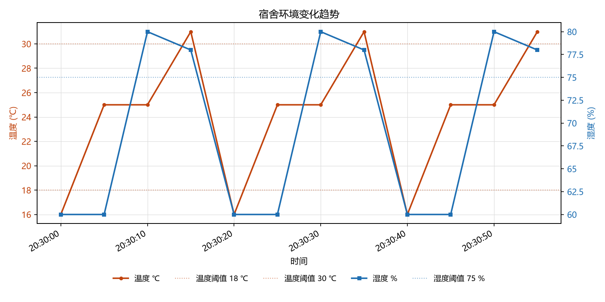

状态一律按统一规则重算（rule_status），不采用 CSV 里写的 status。
| 状态 | 条数 | 占比 | 分布 |
|---|---|---|---|
| 偏冷 | 3 | 25.0% | |
| 偏热 | 3 | 25.0% | |
| 偏湿 | 3 | 25.0% | |
| 正常 | 3 | 25.0% | |
| 合计 | 12 | 100.0% |
rule_status 不是「正常」的都算，共 9 条。
| 时间 | 温度 ℃ | 湿度 % | 状态 |
|---|---|---|---|
| 2026-09-22 20:30:00 | 16 | 60 | 偏冷 |
| 2026-09-22 20:30:10 | 25 | 80 | 偏湿 |
| 2026-09-22 20:30:15 | 31 | 78 | 偏热 |
| 2026-09-22 20:30:20 | 16 | 60 | 偏冷 |
| 2026-09-22 20:30:30 | 25 | 80 | 偏湿 |
| 2026-09-22 20:30:35 | 31 | 78 | 偏热 |
| 2026-09-22 20:30:40 | 16 | 60 | 偏冷 |
| 2026-09-22 20:30:50 | 25 | 80 | 偏湿 |
| 2026-09-22 20:30:55 | 31 | 78 | 偏热 |

数据来源：CSV 里没有 source 列，看不出这份数据是现场采集的还是模拟出来的
这份 CSV 里没有 nodeId 列，没法按宿舍分开算今日摘要。先在网页上导出一份带 nodeId 的数据。
训练数据：dorm-a_history_sim.csv（dorm-a 的模拟历史，共 40 条） · 待判断数据：new_samples.csv（6 条）
这一段判的不是本报告上面那份 CSV，是 C 部分这一对文件 —— 两份是不同的数据，别把这张表的结论安到上面的统计上去。
两种口径回答的不是同一个问题：固定规则看的是提前写好的三条阈值（低于 18 ℃ 偏冷、30 ℃ 及以上偏热、湿度 75 % 及以上偏湿），越过了才说话；ML 看的是「和这个宿舍平时像不像」——它只在 dorm-a 那段历史上训练，自己不知道什么叫阈值。两边对不上不是谁错了：规则说正常的那条可能已经贴着平时的边了，ML 说不同的那条也可能离三条线都远。ML 只作为辅助判断：它多说的那几行值得回头看一眼，但别拿它去改写规则算出来的状态。
6 条新数据里，规则与 ML 不一致的有 2 条。规则判断为正常、ML 认为与历史明显不同的有 11:25（26 ℃ / 62 %）、11:30（29 ℃ / 72 %）。两种口径本来就会在这类数据上分岔：固定规则只看有没有越过那三条线，ML 比的是跟平时的历史像不像。
| 宿舍 | 温度 ℃ | 湿度 % | 固定规则 | ML 判断 | 分数 |
|---|---|---|---|---|---|
| dorm-a | 25 | 60 | 正常 | 接近历史常态 | 0.0347 |
| dorm-a | 26 | 62 | 正常 | 与历史明显不同 | -0.0564 |
| dorm-a | 29 | 72 | 正常 | 与历史明显不同 | -0.123 |
| dorm-a | 31 | 60 | 偏热 | 与历史明显不同 | -0.0823 |
| dorm-a | 25 | 80 | 偏湿 | 与历史明显不同 | -0.0933 |
| dorm-a | 17 | 60 | 偏冷 | 与历史明显不同 | -0.045 |
门槛松紧：拿模型回看它学过的 40 条历史，其中 18 条也会被判「与历史明显不同」——contamination='auto' 不指定异常比例，门槛就不落在历史的外沿上。所以那一列要读成「分数落在门槛的另一侧」，不是「这条读数离谱」；表里的分数就是给人看差多少用的（越小越异常）。
（占位）这一行是占位的，不是结论 —— 换成你自己挑的那条和原因：
这次输出里哪一条判得不理想、为什么，两行以内说清楚就行。